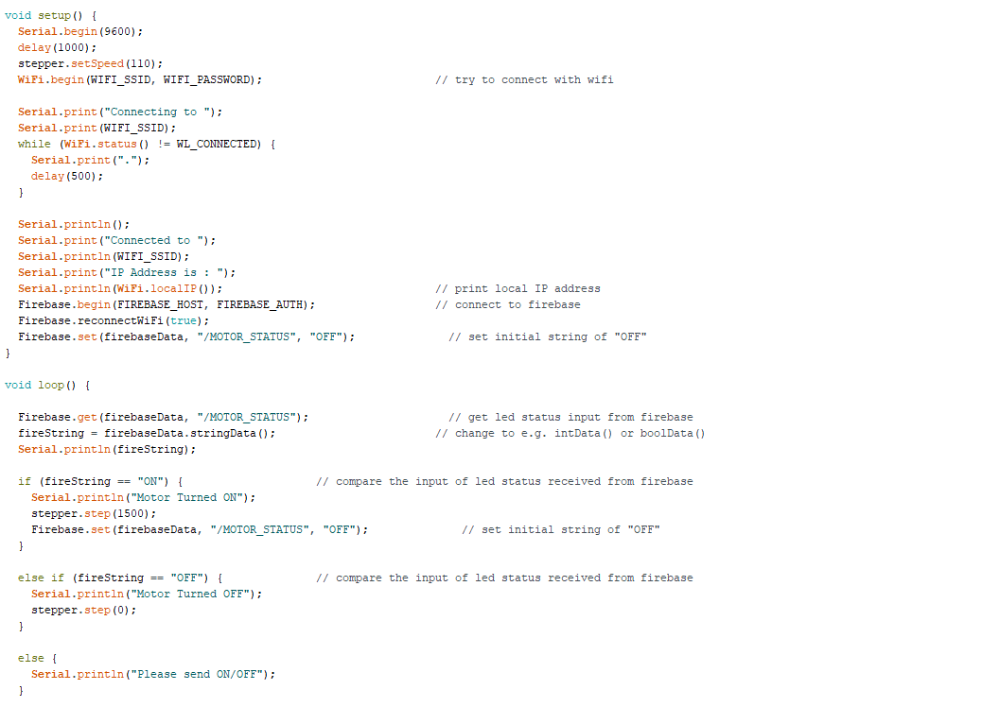
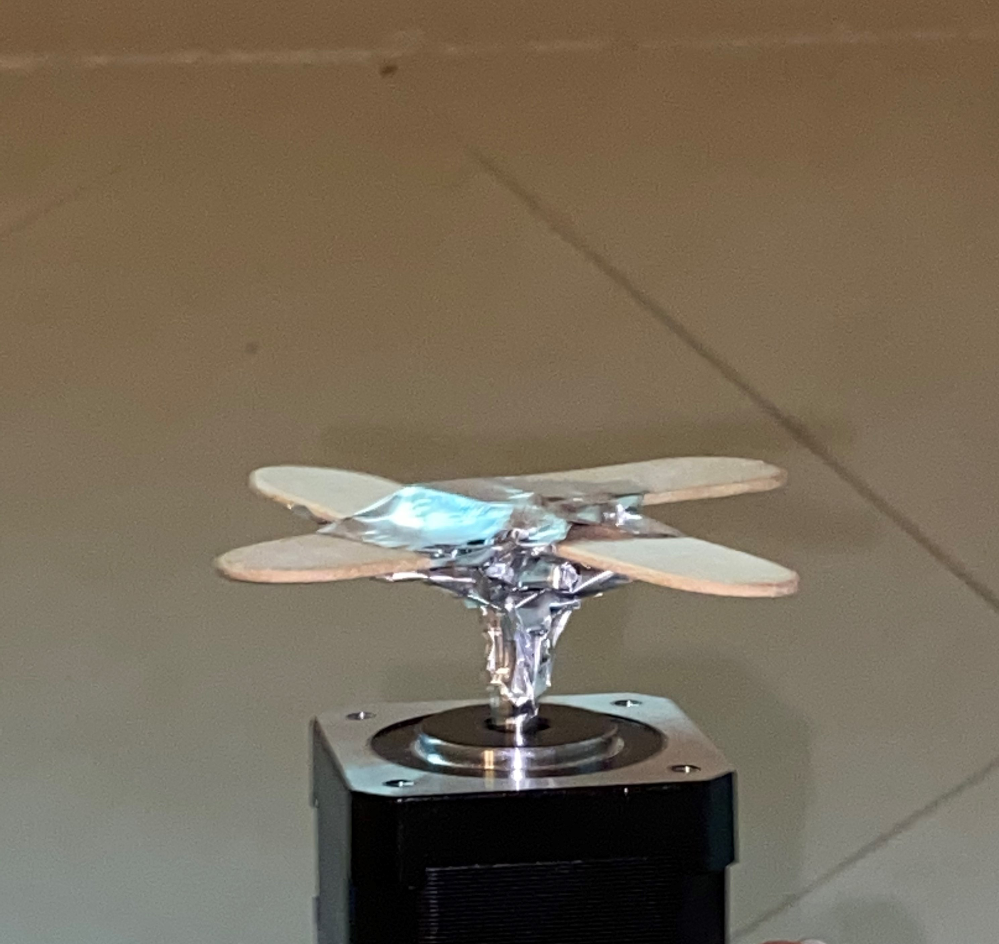

Our assignment this week is to make a machine that's controlled by computer or by phone. A stepper motor had to be involved. I was consumed by the thought of my final project, so I couldn't really think of anything creative to build. I decided to make a fan that could turn fast enough to blow a candle out. I built a 5V circuit with the stepper motor connected to pins 27, 33, 15, and 32 on a Huzzah board. This is the circuit I plan to use for my final project. Using the Stepper library, I did some research on some of the most common commands in order to figure out how to include a stepper motor into our old Firebase tutorial.
It was a little confusing, but I figured it out.
I took a few breaks to build the base of the fan using popsicle sticks. I intended on using post-it notes in order to create more efficient fins. I knew I couldn't rely on the stepper motor's speed alone. I needed to make sure it would push some air at least.
Before I placed the post-it notes, I noticed that the stepper motor was too slow. I knew it would be enough to move my lazy susan, but it definitely wouldn't blow out a candle. I tried fiddling with the code, but the motor seemed to move slower whenever I set the speed higher than 110. Changing the amount of steps didn't do anything at all either. I wondered if it was too late to download the Accelstepper library and learn about its code. I did exactly that but found the commands a little too complicated for me. I decided to settle with the Stepper library and accept the fact that my motor's maximum speed wasn't enough. Although I didn't manage to build an actual machine, at least this experience let me know what to do with my final project and gave me more time to focus on the actual design of my final project, rather than having to worry about the code and whatnot.
Here's the link that'll allow you to move the motor!